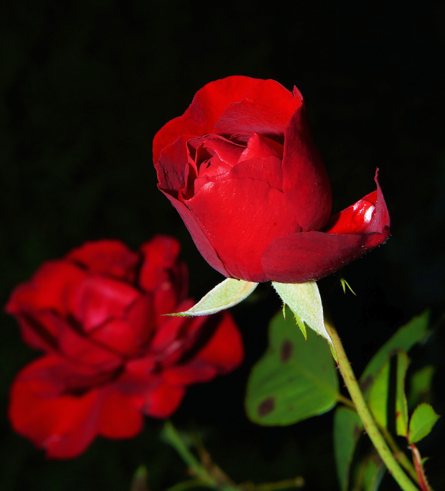

Girassol
O girassol (Helianthus annuus) é uma planta herbácea da família Asteraceae, originária da América do Norte. Suas grandes flores amarelas têm formato de disco com pétalas brilhantes e atraem polinizadores. A planta é conhecida pelo heliotropismo, movendo-se em direção ao sol durante o dia. Suas sementes são nutritivas, ricas em proteínas, gorduras saudáveis e vitaminas, sendo usadas como alimento humano e animal, além da produção de óleo comestível e biodiesel. O girassol é cultivado amplamente por sua beleza ornamental e valor econômico. É uma espécie resistente, adaptando-se a diferentes condições climáticas desde que haja luz solar suficiente.
Rosas

A rosa é uma planta de beleza icônica, pertencente à família Rosaceae. Reconhecida por suas flores encantadoras e variadas cores, ela é amplamente cultivada em jardins e paisagens ao redor do mundo. As rosas vêm em diferentes tipos, incluindo híbridas, trepadeiras e arbustivas. Suas flores delicadas são compostas por pétalas suaves e aroma perfumado, o que as torna símbolos de amor, romance e afeto. Além de seu valor ornamental, algumas espécies de rosas também são usadas na indústria de perfumes e para a produção de óleos essenciais. Para um crescimento saudável, as rosas requerem uma boa quantidade de luz solar e solo bem drenado. Seu cultivo remonta a milhares de anos, demonstrando seu significado histórico e cultural ao longo do tempo.